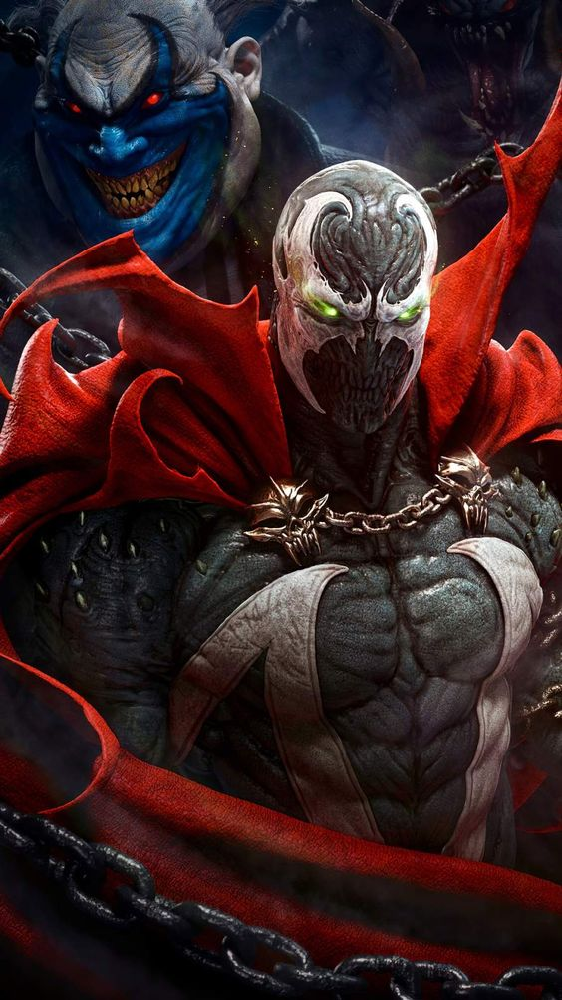

Spawn é um personagem de quadrinhos criado por Todd McFarlane em 1992. Spawn era o agente da CIA Al Simmon, após ser morto em uma emboscada tramada por seu chefe, Spawn vai diretamente para o inferno. Lá, ganha poderes após negociar com o demônio Malebolgia para ter sua vingança e se tornar um "filho do inferno". Spawn depois revolta-se contra os demônios e passa a enfrentar as criaturas sobrenaturais e da Máfia. Além da série de HQ que tem o mesmo nome do personagem, Spawn estrela um filme, uma série de desenho animado no canal HBO, e vários jogos de video-game, tornando-se uma franquia conhecida. Além disso, McFarlane também fundou a McFarlane Productions, que fabrica todos os produtos relacionados ao herói, especialmente bonecos e esculturas, reconhecidos por seus grandes detalhamentos. Spawn contou também com participações de roteiristas famosos como Frank Miller (Sin City, 300 de Esparta), Alan Moore (V de Vingança, Watchmen), e Neil Gaiman (Sandman, Morte). Inicialmente, a arte da revista era feita pelo próprio McFarlane, que depois passou o lápis para Greg Capullo, passando a fazer apenas a arte-final. Anos depois, o traço ficou sob a responsabilidade de Angel Medina e Capullo passou a desenhar apenas as capas.
